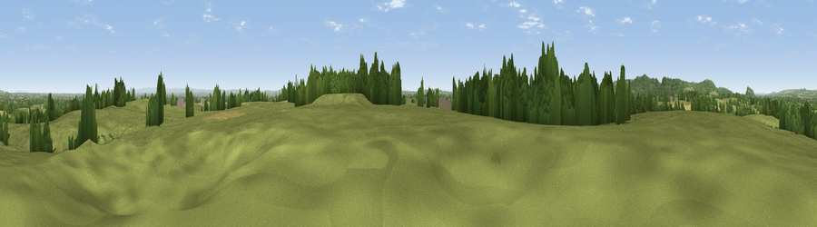

Ridley Bank
#24738 in England · top 69% of its area beats it · near FaddileyThe view, rendered

A 360° render of this exact spot computed from the terrain model, tree cover and land cover — summer colours, afternoon light, calibrated against photographs of famous viewpoints. Real trees, hedges and buildings will differ in detail.
The panorama
Grey silhouette: terrain skyline in each direction (720 bearings, Earth curvature and refraction included). Dashed green: skyline with trees (+15 m) and buildings (+8 m) as obstacles. Blue strip: how far the ground is visible on each bearing.
Where the view opens
Wedge length = distance to the farthest visible ground on that bearing (vegetation-aware). Rings at 10, 25 and 50 km.
What fills the view
73% grassland · 15% woodland · 9% cropland · 2% built-up
Angular shares of the visible panorama (visual magnitude), not map area. Landscape diversity 0.36 (0–1 Shannon).
Key numbers
More beautiful places nearby
The staircase of upgrades: each row has a higher view potential than everything closer. Driving times are estimates from straight-line distance, calibrated against real road routing — check an actual route before setting out.
| Place | Direction | Drive | Score |
|---|---|---|---|
| Viewpoint near Bulkeley | WNW · 4 km | ~9 min | 77.3 |
| Viewpoint near Harthill | W · 6 km | ~12 min | 80.5 |
| Viewpoint near Little Wenlock | S · 46 km | ~67 min | 84.2 |
| The Wrekin | S · 47 km | ~67 min | 85.0 |
| Viewpoint near Little Wenlock | S · 47 km | ~67 min | 86.6 |
| North Hill | S · 110 km | ~134 min | 86.8 |
| Worcestershire Beacon | S · 111 km | ~135 min | 87.1 |
| Viewpoint near Cartmel | N · 127 km | ~151 min | 87.2 |
53.08352, -2.64879 · source: osm peak · position refined by local search. Computed location — check access rights before visiting.